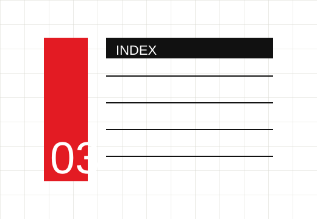

01
系统拆解
面对 HMI、AI Agent、儿童硬件或空间服务时，先找清楚角色、场景、约束与信息流，而不是急着画界面。
DESIGN / PRODUCT / INTERACTION / AI
在用户、系统与产品之间，
寻找更清晰的体验秩序。
ABOUT / RESUME
参与复杂信息流程中的资料梳理、结构化表达与跨角色沟通，把真实约束转译成清晰方案。
设计工具Figma / Illustrator / Photoshop / Blender
技术实践Python / HTML / CSS / JavaScript / Android Studio / Git
核心方向产品体验 / 智能交互 / HMI / 原型实现
SYSTEMATIC PROJECT INDEX
瑞士风格回到严格网格和坐标系统：少装饰，多层级，以目录的形式展现作品。

HOW I DESIGN / SYSTEM TO EXPERIENCE
面对 HMI、AI Agent、儿童硬件或空间服务时，先找清楚角色、场景、约束与信息流，而不是急着画界面。
把用户的真实行为转译成可操作路径：什么时候提醒、哪里给反馈、怎样降低理解成本，都要落到体验节奏里。
不只停在概念图，会用 Figma、HTML、Android Studio、Blender 等工具把关键交互做出来，观察它是否真的成立。
产品、空间、工程装置、游戏化、AI 与 HMI 并不是分散经验，而是同一种能力：把抽象系统变成能被使用的东西。
PORTFOLIO 2025 / ENDING
设计不是把问题画漂亮，— 张长瑞
而是让复杂系统变得可以被理解、被使用、被感知。